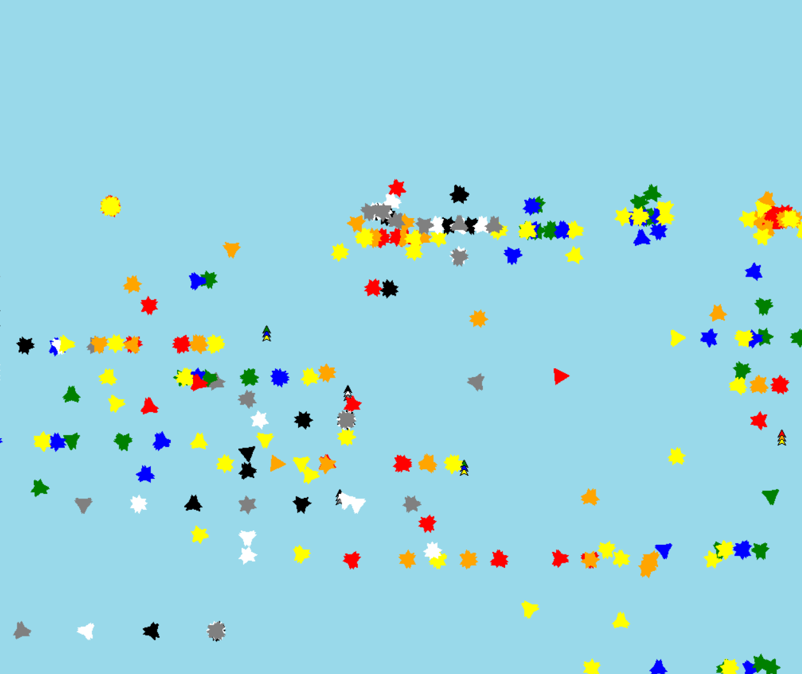
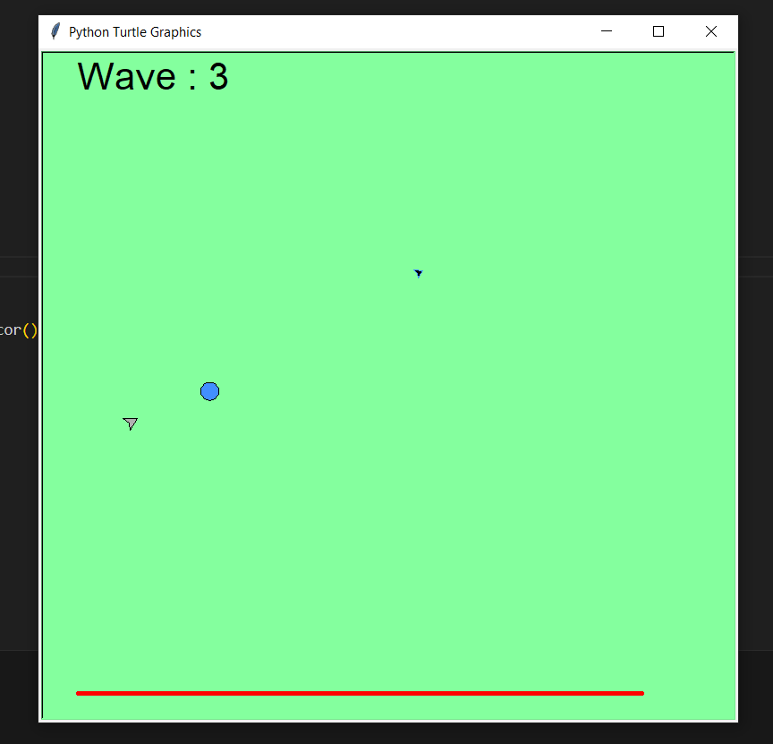
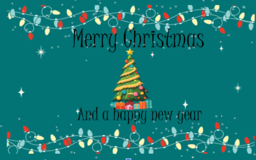
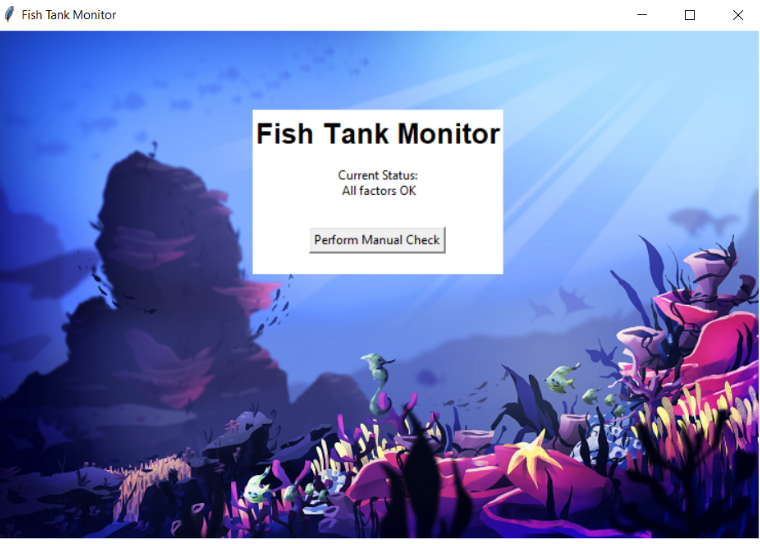
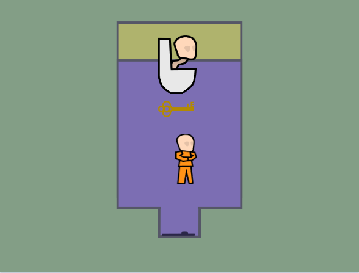
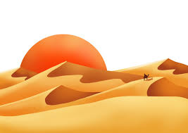

Home
Portfolio
About Me
Projects
Firework Project

This was a simple project about fireworks shooting up into the sky then exploding into little particles.
Screen Rider

This was a project based on a topdown rouglike game. in it your character stays still but moving your mouse moves the entire world around them.
Christmas Card Project

This was a little cristmas card i made. in it i coded little snowflakes to fall down and then wrap around the bottom of the screen.
Fish Tank Moniter

This was a project to fix a broken ui for a fictional fishtank.
Scratch Game

This was a ambitious prject to make a horror game in scratch. it technically has a begining and end though its mostly unfinished for now. we based it on brainrot and how we could amalgamate icons of brainrot
Rover Phone Home Project

This was a project about data processing about trying to figure out where a fictional rover was. we were given only a set of points and what kind of sensers the rover had. based on our best guess we chose desert as it had the most matches to what kind of things the sensers would output.